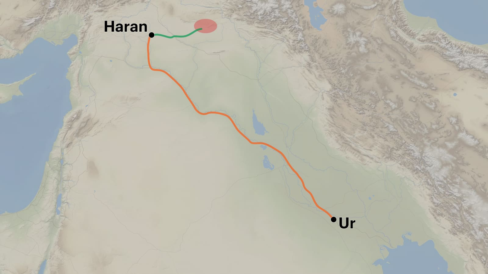
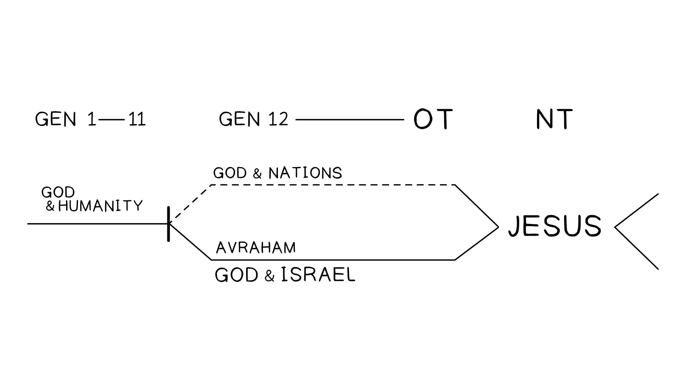

Existem três seções nesta macro-unidade, e elas exibem uma coesão e um design simétrico rigorosos.There are three sections in this macro-unit, and they exhibit strict cohesion and symmetrical design.
Gênesis 11:27-19:38. Design Literário por Tim Mackie para BibleProject Classroom: Abraham (2021).Genesis 11:27-19:38. Literary Design by Tim Mackie for BibleProject Classroom: Abraham (2021).
Este primeiro grande trecho da história de Avraham foi organizado em três movimentos, cada um consistindo de três unidades literárias. Essas tríades são simetricamente projetadas em cada nível, convidando o leitor a fazer comparações e contrastes vitais que informam a contribuição de cada cena para o todo.This first major excerpt from the story of Avraham was organized into three movements, each consisting of three literary units. These triads are symmetrically designed on each level, inviting the reader to make comparisons and contrasts vital that inform the contribution of each scene to the whole.
Estes são dois grandes blocos onde o sobrinho de Avraham, Ló, aparece como personagem principal. Em ambos os casos, o desrespeito de Avraham ao mandamento de Deus para deixar sua famíliayour family para trás resulta em grandes problemas, primeiro na captura de Ló pela aliança babilônica (Gn. 14), e segundo quando ele precisa ser resgatado de Sodoma (Gn. 19). Em ambas as histórias, Deus livra o sobrinho não escolhido através do status de Avraham como o intercessor escolhido, abençoado e justo.These are two large blocks where the nephew of Avraham, Lot appears as the main character. In both cases, Avraham's disregard for the commandment of God to leave his family behind results in major problems, first in Lot's capture by alliance Babylonian (Gen. 14), and second when he needs to be rescued from Sodom (Gn. 19). In both stories, God delivers the unchosen nephew through Avraham's status as the chosen intercessor, blessed and fair.
As primeiras promessas de uma grande família para Avraham e Sara são feitas emThe first promises of a large family to Avraham and Sara are made in 12:1-912:1-9, mas não são cumpridas até, but they are not fulfilled until 18:1-1518:1-15. .
Esta tríade de histórias rigidamente organizadas está conectada de maneiras importantes. Todas giram em torno da luta de Avraham para confiar na promessa de Deus de que ele e Sara produzirão um filho.This triad of rigidly organized stories is connected in important ways. All revolve around Avraham's struggle to trust God's promise that he and Sarah will produce a son.
Nos capítulos 15 e 17, Avraham tanto acredita quanto não acredita na promessa de Deus, levando à segunda grande aliança na história bíblica.In chapters 15 and 17, Avraham both believes how much not believes in God's promise, leading to the second great covenant in biblical history.
Da Babilônia para CanaãFrom Babylon to Canaan
A Jornada de Terá, o PaiThe Journey of Terah, the Father
A Jornada de Abrão, o Filho +The Journey of Abram, the Son + LóLot
De Canaã para o EgitoEgypt e de Volta para CanaãFrom Canaan to Egypt and Back to Canaan
Promessa da Semente e da TerraSeed and Land Promise
Engano com a IrmãDeception with the Sister
Divisão com o IrmãoDivision with the Brother
Promessa da Semente e da TerraSeed and Land Promise
Da Babilônia para CanaãFrom Babylon to Canaan
Neste primeiro grande movimento da história de Avraham, as unidades literárias são determinadas por movimentos de e para locais (Babilônia, Canaã e EgitoEgypt) e pelos personagens principais em foco.In this first great movement in history of Avraham, literary units are determined by movements to and from locations (Babylon, Canaan, and Egypt) and by main characters in focus.
Note o design simétrico dos locais.Note the symmetrical design of the locations.
Gênesis 11:27-14:24Genesis 11:27-14:24. Design Literário por Tim Mackie... . Literary Design by Tim Mackie...
Este design encoraja o leitor a comparar as duas histórias que apresentam a Babilônia e a presença de Ló na família de AvramAvram. Nos capítulos 11-12, AvramAvram traz Ló, mesmo que Deus lhe tenha dito para deixar sua famíliayour family para trás. Essa decisão assombra AvramAvram na história da disputa entre Ló e AvramAvram, que leva à sua migração para Sodoma. E, claro, a presença de Ló em Sodoma causa enormes dores de cabeça para AvramAvram no capítulo 14.This design encourages the reader to compare the two stories that feature Babylon and Lot's presence in AvramAvram's family. In chapters 11-12, AvramAvram brings Lot, even though God told him to leave your family backwards. This decision haunts AvramAvram in the story of the dispute between Lot and AvramAvram, which leads to his migration for Sodom. And, of course, Lot's presence in Sodom causes AvramAvram enormous headaches in the future. chapter 14.
Aninhadas dentro das histórias de Babilônia/Ló estão duas histórias onde AvramAvram constrói altares junto a árvores sagradas e recebe uma revelação divina sobre sua futura herança da terra. Na primeira história, é um presente de Deus. Na segunda história em Manre (13:12-18), o dom da terra reverte o perigo que a disputa de AvramAvram e Ló representava para a promessa.Nestled within the Babylon/Lot stories are two stories where AvramAvram builds altars next to sacred trees and receives a divine revelation about his future inheritance of the earth. In the first history, is a gift from God. In the second story in Mamre (13:12-18), the gift of the land reverses the danger that the dispute of AvramAvram and Lot represented for the promise.
Dentro disso, há duas histórias sobre Avraham encontrando a presença de Deus na terra e construindo altares para adoração; ele está demarcando a terra como um lugar de adoração sagrada.Within this, there are two stories about Avraham encountering God's presence in the land and building altars for worship; he is marking the land as a place of sacred worship.
No centro desta sequência está o exílio autoimposto de AvramAvram no EgitoEgypt, que leva ao desastre quando ele coloca em risco o futuro da semente prometida.At the center of this sequence is AvramAvram's self-imposed exile in Egypt, which leads to disaster when he puts the future of the promised seed at risk.
2727 E estas são as gerações de Terá.And these are the generations of Terah.
a. Terá geroua. Terah begot AvramAvram, , NaorNahor e e HarãHaran; ;
a'. e HarãHaran geroua'. and Haran begot LóLot. .
b. b. 2828 E E HarãHaran morreu antes de seu pai TeráHaran died before his father Terah
c. c. na terra de sua famíliayour familyin the land of your family,,
c. ec. andmc. in Ur dos CaldeusUr dos ChaldeansUr dos Chaldeans. .
a. a. 2929 E E AvramAvram e e NaorNahor tomaram esposas para si,took wives for themselves,
b. o nome da esposa de AvramAvram erab. AvramAvram's wife's name was SaraiSarai; ;
c. ec. and o nome da esposa de NaorNahor era MilcaMilcaNahor's wife's name was MilcaMilcah,,
c'.c'. a filha de HarãHaranthe daughter of Haran, o pai de, the father of MilcaMilca e Iscá.and Isca.
b'.b'. 3030 E E SaraiSarai era estéril, ela não tinha filhosSaraiSarai was sterile, she did not have children. .
3131 Terá tomou (...ויקח תרח)Terah took (...ויקח תרח)
AvramAvram seu filhohis son
e e LóLot, o filho de HarãHaran, filho de seu filhohis son,, the son of Haran, son of his son,
e e SaraiSarai sua nora, esposa de seu filhohis son AvramAvram;his daughter-in-law, his son AvramAvram's wife;
e e eles saíramthey left com eles dewith them of Ur dos CaldeusUr dos ChaldeansUr dos Chaldeans
para ir para a terra de Canaãto go to the land of Canaanto go to the land of Canaan; ;
e foramand they went até HarãHaran, e ali se estabeleceram.to Haran, and there have established themselves.
3232 E E os dias de Terá foram duzentos e cinco anosthe days of Terah were two hundred and five years; ;
e Terá morreu em HarãHaranand Terah died in Haran. .
12:112:1 E Yahweh disse a AvramAvram,And Yahweh said to AvramAvram,
a. "Saiaa. "Go
b. dab. of the sua terrayour land, ,
b'.b'. e dab'.b'. yes sua famíliayour family, ,
b'.b'. e dab'.b'. yes casa de seu paihouse of his father, ,
a'. para a terra que eu lhe mostrarei.the'. to the land that I will show you.
a. a. 22 E E eu farei de você uma grande naçãoI will do of you a great nation, ,
b. e eu o abençoareiI will bless,b. and I will bless you,
a'. e farei grande o seu nome;the'. and I will make your name great;
b'.b'. e assim você será uma bênção.b'.b'. and so you will be a blessing.
a. a. 33 E euAnd I abençoareiI will bless
b. aqueles que ob. those who abençoarembless,,
b'.b'. e aquele que o trata comob'.b'. and him who treats you with amaldiçoadocursed
a'. eua'. I amaldiçoareiI will curse; ;
a. e em você todas asthe. and in you all famílias da terrafamilies of the earth
b. encontrarão bênção.”b. you will find blessing.”
44 E AvramAvram partiu, como Yahweh lhe havia falado, e Ló foi com ele,And AvramAvram departed, as Yahweh had spoken to him, and Lot went with him,
e e AvramAvram tinha setenta e cinco anosAvramAvram was seventy-five years old quando saiu de HarãHaranwhen he left Haran. .
55 E AvramAvram tomou (...ויקח אברם)E AvramAvram Tomou (...and Abram took)
SaraiSarai sua esposa e Ló,SaraiSarai his wife and Lot, filho de seu irmãohis brother's son
e todos os seus bens que possuíamand all their possessions that they possessed
e as pessoas que haviam adquirido em HarãHaran,and the people who had acquired in Haran,
e eles saíramthey leftand they left
para ir para a terra de Canaãto go to the land of Canaanto go to the land of Canaan
e chegaramand arrived à terra de Canaã.to the land of Canaan.
Gênesis 11:27-12:5Genesis 11:27-12:5Genesis 11:27-12:5. Tradução e Design Literário por Tim Mackie para BibleProject Classroom: Noé a Abraão (2020).Genesis 11:27-12:5. Translation and Literary Design by Tim Mackie for BibleProject Classroom: Noah to Abraham (2020).
Note como esta jornada de dois passos é também uma jornada de duas gerações. O que Terá começa, AvramAvram completa, mas apenas por causa da palavra de Deus que vem a AvramAvram.Notice how this two-step journey is also a two-generation journey. What will you have begins, AvramAvram complete, but only because of the word of God that comes to AvramAvram.
A jornada de Terá começa com duas notas trágicas: a morte de HarãHaran e a esterilidade de SaraiSarai, sua nora. A infertilidade de SaraiSarai também destaca o contraste entre ela e sua cunhada MilcaMilca. Ambas têm nomes reais (“Princesa” e “Rainha”), mas a identidade de MilcaMilca é descrita em termos de suas relações familiares, enquanto a identidade de SaraiSarai é descrita apenas em relação à sua incapacidade de ter filhos.Terah's journey begins with two tragic notes: the death of Haran and the barrenness of SaraiSarai, your daughter-in-law. A SaraiSarai's infertility also highlights the contrast between her and her sister-in-law MilcaMilca. Both have names real (“Princess” and “Queen”), but MilcaMilca’s identity is described in terms of her relationships family members, while SaraiSarai's identity is described only in relation to her inability to have children.
A jornada de Terá começa com essas notas trágicas e, em seguida, se desenvolve em um processo de três estágios: (1) “tomar”, (2) “sair” e (3) chegar em HarãHaran, onde Terá morre. A jornada de Terá começa com a morte de HarãHaran e termina com sua própria morte em outro HarãHaran.Terah's journey begins on these tragic notes and then develops into a process of three stages: (1) “taking”, (2) “leaving” and (3) arriving in Haran, where Terah dies. Terah's journey starts with the death of Haran and ends with his own death in another Haran.
A jornada de AvramAvram começa com uma lembrança das duas notas trágicas que iniciaram a jornada de Terá. Ele deve deixar sua famíliayour family e a casa de seu paihouse of his father (marcadas pela morte), e Deus fará dele uma grande nação (revertendo assim a infertilidade de SaraiSarai).AvramAvram's journey begins with a reminder of the two tragic notes that began the journey of It will. He he must leave his family and his father's house (marked by death), and God will make him a big nation (thus reversing SaraiSarai's infertility).
Deus não apenas reverterá as tragédias de sua famíliayour family, mas também trará uma bênção de Gênesis 1 que produzirá uma superabundância de bênçãos que fluirão dele para as outras famílias das nações.God will not only reverse the tragedies of his family, but will also bring a blessing from Genesis 1 that will produce a superabundance of blessings that will flow from him to the other families of the nations.
Uma vez que AvramAvram recebe esta palavra divina de bênção que reverte o destino de seu pai, ele inicia seu próprio processo de três passos de (1) “tomar”, (2) “sair” e (3) chegar em Canaã. Quando ele finalmente chega em Canaã, AvramAvram completa a jornada que seu pai começou. Note como as cenas se alternam precisamente entre três estágios de jornada, pontuados por duas paradas em Siquém e Betel, onde AvramAvram constrói altares e adora a Yahweh, que o chamou e sua famíliayour family para fora de Ur dos CaldeusUr dos ChaldeansUr dos Chaldeans.Once AvramAvram receives this divine word of blessing that reverses his father's destiny, he begins his own three-step process of (1) “taking”, (2) “leaving” and (3) arriving in Canaan. When he finally arrives in Canaan, AvramAvram completes the journey his father began. Note how the scenes precisely alternate between three stages of journey, punctuated by two stops in Shechem and Bethel, where AvramAvram builds altars and worships Yahweh, who called him and his family out of Ur of the Chaldeans.
O design literário de GênesisThe Literary Design of Genesis 6:1-11:266:1-11:26 nos prepara para ver a saída de AvramAvram de Ur dos CaldeusUr dos ChaldeansUr dos Chaldeans após a dispersão da Babilônia emprepares us to see AvramAvram's departure from Ur of the Chaldeans after the dispersion of Babylon in 11:27-12:911:27-12:9 em um paralelo à saída de Noé da arca após o dilúvio.in a parallel at the exit of Noah from the ark after the flood.
| Saída de Noé da Arca e Bênção FamiliarNoah's Exit from the Ark and Family Blessing | Saída de AvramAvram da Babilônia e Bênção FamiliarAvramAvram's Exit from Babylon and Family Blessing |
|---|---|
| Dez gerações de Adão a Noé; 3 filhosTen generations from Adam to Noah; 3 children | Dez gerações de Noé a AvramAvram (de 3 filhos)Ten generations from Noah to AvramAvram (from 3 sons) |
| Gn. 6:1-4Gn. 6:1-4 A história do dilúvio começa com violência e derramamento de sangue perpetrados por guerreiros e “homens de nome”.The story of the flood begins with violence and spillage of blood perpetrated by warriors and “men of name”. |
Gn. 10:8-12Gn. 10:8-12 Babilônia é fundada
por um guerreiro violento, um homem de
nome.Babylon is founded by a violent warrior, a man of name.
Gn. 11:1-9Gn. 11:1-9Gn. 11:1-9Gn. 11:1-9 Babilônia é construída por pessoas que buscam fazer um nome para si mesmas.Babylon is built by people looking to make a name for yes same. |
| Noé e aqueles com ele são abrigados na arca durante o dilúvio.Noah and those with him are sheltered in the ark during the flood. | Terá e aqueles com ele se refugiam em HarãHaran após a dispersão da Babilônia.Terah and those with him take refuge in Haran after the dispersion from Babylon. |
| Noé “sai” da arca com sua famíliayour family (יצא repetido 4x em Gn.Noah “leave” the ark with his family (יצא repeated 4x in Gn. 8:16-198:16-19): “e Noé saiu da arca, e seus filhos, sua esposa e as esposas de seus filhos”.): “and Noah left of the ark, and his children, his wife, and his children’s wives.” |
Gn. 11:31Gen. 11:31 Terá “saiu” da
Babilônia com sua famíliayour
family: “e Terá tomou AvramAvram
seu
filhohis son...
e eles
saíramthey leftand they
left com eles dewith them
of Ur dos CaldeusUr dos
ChaldeansUr dos
Chaldeans”.Terah “went out” from
Babylon with his family: “and Terah took AvramAvram
his
son...
and they
went out with them from Ur of the Chaldeans”. Gn. 12:5Gen. 12:5 AvramAvram “saiu” de HarãHaran com sua famíliayour family “e AvramAvram tomou sua esposa e o filho de seus irmãos... e eles saíramthey leftand they left para ir para a terra de Canaãto go to the land of Canaanto go to the land of Canaan”.AvramAvram “went out” from Haran with his family “and AvramAvram took his wife and the son of his brothers... and they went out to go to the land of Canaan.” |
| Deus promete que Noé e sua esposa serão “frutíferos e se
multiplicarão”.God promises that Noah and his wife will be “fruitful and
they will multiply.”
Gn. 9:1Gen. 9:1 “E Deus abençoou Noé e seus filhos e disse: ‘Sede fecundos, multiplicai-vos e enchei a terra’”.“And God blessed Noah and his sons and said, ‘Be fruitful, multiply, and fill the earth’”. |
Deus promete fazer AvramAvram e sua esposa “frutíferos e se
multiplicarem”.God promises to make AvramAvram and his wife “fruitful and
multiply”.
Gn. 12:1-2Gn. 12:1-2 “E Yahweh disse a AvramAvram: ‘... Farei de ti uma grande nação e te abençoareiI will bless...’”.“And Yahweh said to AvramAvram: ‘...I will make you a great nation and I will bless you...’ ”. |
Saindo da Arca e da Babilônia. Criado por Tim Mackie...Leaving the Ark and Babylon. Created by Tim Mackie...
Assim como a vida de Noé foi preservada em meio a um grande ato de julgamento divino sobre a violência humana, a família de Terá é preservada do julgamento-dispersão divino da Babilônia. A saída de Noé do abrigo divinamente provido é seguida por uma promessa de fecundidade e bênção, e a saída de AvramAvram de HarãHaran inclui um chamado divino para ir a uma nova terra de fecundidade e bênção. Todas essas semelhanças destacam um dos maiores contrastes entre Noé e AvramAvram: a incapacidade de SaraiSarai de ter filhos é muito diferente dos muitos filhos e netos de Noé e sua esposa. Esse contraste nos prepara para o grande drama da história de AvramAvram e SaraiSarai.Just as Noah's life was preserved amidst a great act of divine judgment on human violence, Terah's family is preserved from the divine judgment-dispersion of Babylon. Noah's departure from the divinely provided shelter is followed by a promise of fruitfulness and blessing, and AvramAvram's departure from Haran includes a divine call to go to a new land of fruitfulness and blessing. All these similarities highlight one of the greatest contrasts between Noah and AvramAvram: SaraiSarai's inability to have children is very different from the many children and grandchildren of Noah and his wife. This contrast prepares us for the great drama of the story of AvramAvram and SaraiSarai.
A jornada de Terá e Avraham é contrastada com a jornada na narrativa anterior dos filhos de Noé, que termina na rebelião e dispersão da Babilônia. Uma história termina em desastre e a outra começa em bênção.The journey of Terah and Avraham is contrasted with to journey in the earlier narrative of Noah's sons, which ends in the rebellion and dispersion of Babylon. One history one ends in disaster and the other begins in blessing.
| Gênesis 11:1-9Genesis 11:1-9 Uma Jornada para o DesastreA Journey to Disaster |
Gênesis 11:27-12:9Genesis 11:27-12:9 Uma Jornada para a BênçãoA Journey to the Blessing |
|---|---|
| >Começa com “toda a terra... viajando (נסע) do leste (מקדם)”>Starts with “all the earth... traveling (נסע) from the east (מקדם)” [11:1-2][11:1-2]
Conclui com “toda a terra” sendo “espalhada” (נפוץ / הפיץ)Concludes with “all the earth” being “scattered” (נפוץ / הפיץ) [11:9][11:9] |
Começa com uma família saindo (ויצאו) do lugar da dispersão, Ur dos
CaldeusUr dos
ChaldeansUr dos
ChaldeansIt begins with a family leaving (ויצאו) the place of dispersion, Ur of the Chaldeans
[11:31][11:31]
Conclui com AvramAvram “viajando” (נסע) para Canaã em lugares “do leste” (מקדם)It concludes with AvramAvram “travelling” (נסע) to Canaan in places “in the east” (מקדם) [12:8-9][12:8-9] |
| Eles encontram uma “planície em Sinar” e “ali se estabeleceram” (וישבו שם)They find a “plain in Shinar” and “there they settled” (וישבו שם) [11:2][11:2] | Eles chegam a HarãHaran e “ali se estabeleceram” (וישבו שם)They arrive in Haran and “settled there” (וישבו שם) [11:31][11:31] |
| “Vamos construir (בנה) para nós uma cidade e uma torre”“Let us build (בנה) ourselves a city and a tower” [11:4][11:4]
“... a cidade e a torre que os filhos de Adão construíram (בנה) para si mesmos”“... the city and the tower which the sons of Adam built (בנה) for themselves” [11:5][11:5] |
“e Yahweh disse” (ויאמר יהוה)"e Yahweh disse" (And Jehovah said) [12:1][12:1] seguido por uma reversão de circunstâncias — da esterilidade ao nascimentofollowed by a reversal of circumstances — from sterility to birth |
| “Façamos para nós um nome (שם)”“Let us make a name for ourselves (שם)” [11:4][11:4] | “Eu farei grande o seu nome (שם)”“I will make your name (שם) great” [12:2][12:2] |
| “e Yahweh disse” (ויאמר יהוה)"e Yahweh disse" (And Jehovah said) [“Yahweh said” (ויאמר יהוה) [11:611:6] seguido por uma reversão de circunstâncias — da construção à dispersão] followed by a reversal of circumstances — from construction to dispersion | “e [AvramAvram] construiu (בנה) ali um altar a Yahweh” [“[AvramAvram] built (בנה) there an altar to Yahweh” [12:712:7 ]
]
“e [AvramAvram] construiu (בנה) ali um altar a Yahweh e invocou o nome (שם) de Yahweh.” [“and [AvramAvram] built (בנה) there an altar to Yahweh and invoked the name (שם) of Yahweh.” [12:812:8] ] |
| Uma jornada para o oeste que termina com o estabelecimento de humanos que usam seu potencial para seu próprio nome, de modo que Yahweh se torna o antagonista e reverte suas circunstâncias.A journey west that ends with the establishment of humans who use your potential for his own name, so that Yahweh becomes the antagonist and reverse your circumstances. | Uma jornada para o oeste que termina com o estabelecimento de humanos que não têm potencial para fazer um nome para si mesmos, de modo que Yahweh se torna o protagonista e reverte suas circunstâncias.A journey west that ends with the establishment of humans that no they have potential to make a name for themselves, so that Yahweh becomes the protagonist and reverse your circumstances. |
Conto de Duas Jornadas. Criado por Tim Mackie...Tale of Two Journeys. Created by Tim Mackie...
Note como a jornada de “toda a terra” em Gênesis 6:1-11:26 aprofunda o retrato temático da natureza humana expresso em Gênesis 6:5 e 8:21: “os humanos são maus desde a sua juventude”. Eles tomam o potencial e a unidade dados por Deus e os usam para fins egoístas e (que se tornarão) imperiais: a deificação e a exaltação do seu próprio nome. Notice how the sojourn of “all the land” in Genesis 6:1-11:26 furthers the thematic portrait of human nature expressed in Genesis 6:5 and 8:21, “humans are bad from their youth.” They take their God-given potential and unity and use it for selfish and (what will become) imperial ends: the deification and exaltation of their name.
Em contraste, a jornada de Terá começa com a trágica morte de seu filhohis son HarãHaran, e termina com sua própria morte em HarãHaran. Essas mortes são paralelas à incapacidade de AvramAvram e SaraiSarai de ter filhos e perpetuar seu nome. Mas Deus intervém com uma palavra de promessa e bênção, motivando uma jornada final para o oeste, para a terra de Canaã.In contrast, Terah's journey begins with the tragic death of his son Haran, and ends with your own death in Haran. These deaths parallel AvramAvram and SaraiSarai's inability to have children and perpetuate your name. But God intervenes with a word of promise and blessing, motivating a final journey for the west, for the land of Canaan.
Note como a jornada e a construção estão no centro de ambas as narrativas, mas com fins opostos. Os babilônios constroem uma cidade e uma torre para seu próprio nome, enquanto AvramAvram constrói altares para o nome de Yahweh.Note how the journey and building are at the center of both narratives, but with opposite ends. The Babylonians build a city and a tower for their own name, while AvramAvram builds altars for the name of Yahweh.
As duas narrativas de GênesisThe two narratives of Genesis 11:27-3211:27-32 e e 12:1-912:1-9 contrastam as jornadas de Terá e AvramAvram. A primeira diz que foi Terá quem “saiu de Ur dos CaldeusUr dos ChaldeansUr dos Chaldeans” para viajar a Canaã, mas em vez disso, ele chegou apenas a HarãHaran e se estabeleceu ali (contrast the journeys of Terah and AvramAvram. The first says that it was Terah who “left Ur of the Chaldeans” to travel to Canaan, but instead, he only reached Haran and settled there (11:3111:31). Em contraste, AvramAvram é abordado por Deus para ir a Canaã, e então ele “sai” de um local não identificado (). In contrast, AvramAvram is approached by God to go to Canaan, and then he “departs” from an unidentified location (12:512:5) para ir a Canaã. De onde AvramAvram vai para Canaã, e onde é o local da primeira aparição e discurso de Deus a ele em) to go to Canaan. From where AvramAvram goes to Canaan, and where is the place of God's first appearance and discourse to him in 12:1-512:1-5? ?
A sequência literária das duas unidades narrativasThe literary sequence of the two units narratives 11:27-3211:27-32 e e 12:1-912:1-9 poderia ser interpretada como uma sequência temporal onde a jornada de AvramAvram com seu pai para HarãHaran precedeu o discurso de Deus a ele para sair e ir para Canaã.could be interpreted as a temporal sequence where AvramAvram's journey with your father for Haran preceded God's address to him to leave and go to Canaan.
Há um porém nesta interpretação direta, no entanto. A única outra vez que a jornada de AvramAvram para Canaã é referenciada na Bíblia Hebraica, diz-se que ele foi convocado por Deus para deixar Ur dos CaldeusUr dos ChaldeansUr dos Chaldeans, não HarãHaran.There is a caveat to this straightforward interpretation, however. The only other time AvramAvram's journey to Canaan is referenced in the Hebrew Bible, he is said to have been called by God to leave Ur of the Chaldeans, not Haran.
Gênesis 15:7 NAA*Genesis 15:7 NAA*
E disse-lhe: “Eu sou Yahweh que te tirei de Ur dos CaldeusUr dos ChaldeansUr dos Chaldeans, para te dar esta terra para a possuíres.”And he said to him, “I am Yahweh who brought you out of Ur of the Chaldees to give you this land for you possess.”
*Palavras-chave Adaptadas pelo Professor*Keywords adapted by the instructor*Keywords adapted by the instructor
A sequência literária de GênesisThe literary sequence of Genesis 11:27-3211:27-32 e e 12:1-512:1-5 não indica necessariamente a sequência de eventos referenciados pela narrativa. Não é incomum na narrativa bíblica que duas unidades narrativas consecutivas sejam colocadas fora de ordem cronológica para que o autor possa alcançar o efeito literário da justaposição, forçando o leitor a comparar e contrastar as duas versões de eventos semelhantes. Isso já aconteceu em momentos cruciais em Gênesis 1-11.does not necessarily indicate the sequence of events referenced by the narrative. It is not uncommon in the biblical narrative that two consecutive narrative units are placed out of chronological order so that the author can achieve the literary effect of juxtaposition, forcing the reader to compare and contrast the two versions of similar events. This has already happened at crucial moments in Genesis 1-11.
| Exemplo 1Example 1 | Gn. 1:1-2:3Gn. 1:1-2:3Gn. 1:1-2:3">">Gn. 1:1-2:3Gn. 1:1-2:3 Criação da terra ordenada a partir das águas escurasCreation of the earth ordered from the dark waters | Gn. 2:4-17Gn. 2:4-17Gn. 2:4-17">">Gn. 2:4-17Gn. 2:4-17 Criação do jardim frutífero a partir do deserto estérilCreating the fruitful garden from the barren desert |
| Exemplo 2Example 2 |
Gn. 10:1-32Gn. 10:1-32Gen.
10:1-32">">Gn.
10:1-32Gen.
10:1-32
• Babilônia construída por Ninrode enquanto ele se espalhaseu império• Babylon built by Nimrod as he spread his empire • Nações já espalhadas com muitas línguas• Nations already spread with many languages |
Gn. 11:1-9Gn. 11:1-9Gn.
11:1-9Gn. 11:1-9">">Gn.
11:1-9Gn. 11:1-9Gn.
11:1-9Gn. 11:1-9
• Babilônia construiu uma humanidade “em busca de nome”• Babylon built a humanity “in search of a name” • Nações ainda não espalhadas e apenas uma língua• Nations not yet scattered and only one language |
Sequência Narrativa Versus Sequência de Eventos. Criado por Tim Mackie...Narrative Sequence Versus Sequence of Events. Created by Tim Mackie...
Em ambos os casos, a sequência literária não corresponde à sequência de eventos. Em vez disso, permite ao autor retratar o mesmo evento de dois ângulos, destacando diferentes temas e ideias ao apresentar o mesmo evento central. A mesma técnica é usada na apresentação da jornada de Terá e AvramAvram de Ur para Canaã. E há outra pista textual que deixa claro que este é o caso.In both cases, the literary sequence does not correspond to the sequence of events. Instead, it allows the author to portray the same event from two angles, highlighting different themes and ideas when presenting the same central event. The same technique is used in the presentation of Terah and AvramAvram's journey from Ur to Canaan. And there is another textual clue that makes it clear that this is the case.
O narrador deixa claro que Terá teve seus três filhos aos 70 anos e depois morreu aos 205. AvramAvram, nos é dito, tinha 75 anos quando recebeu o chamado de Deus para deixar sua famíliayour family e ir para Canaã.The narrator makes it clear that Terah had his three children to 70 years old and then died at 205. AvramAvram, we are told, was 75 years old when he received the calling of God for leave his family and go to Canaan.
Gênesis 11:26 NAA*Genesis 11:26 NAA*
Terá viveu setenta anos e gerou AvramAvram, NaorNahor e HarãHaran.Terah lived seventy years and begot AvramAvram, Nahor, and Haran.
*Palavras-chave Adaptadas pelo Professor*Keywords adapted by the instructor*Keywords adapted by the instructor
Gênesis 11:31-32 NAA*Genesis 11:31-32
3131Terá tomou AvramAvram, seu filhohis son, e Ló, filho de HarãHaran, seu neto, e SaraiSarai, sua nora, esposa de seu filhohis son AvramAvram;his daughter-in-law, his son AvramAvram's wife; e saíram juntos de Ur dos CaldeusUr dos ChaldeansUr dos Chaldeans para entrar na terra de Canaã; e foramand they went até HarãHaran e ali se estabeleceram.Terah took AvramAvram his son, and Lot the son of Haran his grandson, and SaraiSarai his daughter-in-law, wife of his son AvramAvram; and they went out together from Ur of the Chaldeans to go into the land of Canaan; and they came as far as Haran and settled there. 3232Os dias de Terá foram duzentos e cinco anos; e Terá morreu em HarãHaranand Terah died in Haran.The days of Terah were two hundred and five years; and Terah died in Haran.
*Palavras-chave Adaptadas pelo Professor*Keywords adapted by the instructor*Keywords adapted by the instructor
Gênesis 12:4Genesis 12:4-5 NAA*Genesis 12:4-5 NAA*
44Assim AvramAvram partiu como Yahweh lhe havia falado; e Ló foi com ele. Ora, AvramAvram tinha setenta e cinco anosAvramAvram was seventy-five years old quando partiu de HarãHaran.So AvramAvram departed as Yahweh had spoken to him; and Lot went with him. Now AvramAvram was seventy- five years old when he departed from Haran. 55... assim chegaram ... assim chegaram à terra de Canaã.to the land of Canaan.
*Palavras-chave Adaptadas pelo Professor*Keywords adapted by the instructor*Keywords adapted by the instructor
A implicação desses números é muito clara. Terá teve seus filhos aos 70 anos, e seu filhohis son AvramAvram partiu para Canaã aos 75 anos. Isso significa que Terá ainda estava vivo com 145 anos quando AvramAvram foi convocado por Deus emThe implication of these numbers is very clear. Terah had his children at 70, and his son AvramAvram left for Canaan at 75. This means Terah was still alive at 145 when AvramAvram was called by God in 12:112:1. Embora a morte de Terá seja registrada em 11:32, antes de AvramAvram partir para Canaã, as idades dadas pelo narrador mostram que Terá ainda está vivo quando AvramAvram, SaraiSarai e Ló o deixam.. Although Terah's death is recorded in 11:32, before AvramAvram departs for Canaan, the ages given by the narrator show that Terah is still alive when AvramAvram, SaraiSarai, and Lot leave him.
“Os protagonistas bíblicos frequentemente saem do palco narrativo muito antes de suas vidas cronológicas terminarem. Por exemplo, Noé morre antes do início da narrativa de Abraão. Mas um cálculo simples mostra que Noé morre quando Abraão tinha 58 anos (ver Gn.“The protagonists biblical they often leave the narrative stage long before their chronological lives end. By example, Noah dies before the beginning of the Abraham narrative. But a simple calculation shows that Noah dies when Abraham had 58 years (see Gen. 9:28-299:28-29); da mesma forma, Isaque ainda estava vivo quando seu neto José foi vendido); Likewise, Isaac was still alive when his grandson Joseph was sold (Gn. 35:28-29)(Gen. 35:28-29). Gênesis... é uma série abrangente de retratos que traçam um personagem do nascimento à morte antes que o próximo personagem seja introduzido... O foco só cai sobre Abrão quando Terá sai de cena, apesar do fato de que os primeiros eventos na história de Abrão ocorrem durante a vida de Terá... Este estilo de narrativa ilumina a correlação entre a jornada de Terá e a revelação de Deus a Abrão... É razoável concluir que a decisão de Terá de imigrar para Canaã está conectada ao mandamento de Deus a Abrão.”. Genesis... is a comprehensive series of portraits that trace a character from birth to death before the next character is introduced... The focus only falls on Abram when Terah exits the scene, despite the fact that the first events in Abram's story occur during Terah's lifetime... This narrative style illuminates the correlation between Terah's journey and God's revelation to Abram... It is reasonable to conclude that Terah's decision to immigrate to Canaan is connected to God's command to Abram.”
Grossman, Jonathan (2016). Abram to Abraham: A Literary Analysis of the Abraham Narrative. Peter Lang. 74-75.Grossman, Jonathan (2016). Abram to Abraham: A Literary Analysis of the Abraham Narrative. Peter Lang. 74-75.
O narrador separou a única partida de Terá e AvramAvram de Ur dos CaldeusUr dos ChaldeansUr dos Chaldeans em dois retratos narrativos distintos para destacar os diferentes significados de suas jornadas.The narrator separated Terah's only match and AvramAvram of Ur of the Chaldeans in two distinct narrative portraits to highlight the different meanings of your journeys.
A jornada de Terá está associada à morte e à infertilidade.Terah's journey is associated with death and infertility.
Gênesis 11:28 NAAGenesis 11:28 NASB
HarãHaran morreu na presença de seu pai Terá na terra de seu nascimento, em Ur dos CaldeusUr dos ChaldeansUr dos Chaldeans.Haran died in the presence of his father Terah in the land of his birth, in Ur of the Chaldeans.Haran died in the presence of his father Terah in the land of his birth, in Ur of the Chaldeans.
Gênesis 11:30 NAA*Genesis 11:30 NASB*
SaraiSarai era infértil; ela não tinha filhos.SaraiSarai was barren; she had no children.SaraiSarai was barren; she had no children.
*Palavras-chave Adaptadas pelo Professor*Keywords adapted by the instructor*Keywords adapted by the instructor
Gênesis 11:32 NAA*Genesis 11:32 NASB*
... e Terá morreu em HarãHaranand Terah died in Haran.... and Terah died in Haran.... and Terah died in Haran.
*Palavras-chave Adaptadas pelo Professor*Keywords adapted by the instructor*Keywords adapted by the instructor
Em contraste, a jornada de AvramAvram, que foi a mesma de seu pai, está associada à obediência ao chamado de Deus, seguida de bênção e da promessa de família e abundância.In contrast, AvramAvram's journey, which was the same as his father's, is associated with obedience to God's call, followed by blessing and the promise of family and abundance.
Gênesis 12:1-2Genesis 12:1-2 Tradução do InstrutorInstructor's Translation
11... ... Vá da sua terrayour land e da sua famíliayour family... para a terra que eu lhe mostrarei.Go from your land and your family... to the land that I will show you.Go from your land and your family... to the land that I will show you. 22... ... e farei de você uma grande nação e o abençoareiI will bless.and I will make you a great nation and bless you.
Gênesis 12:4Genesis 12:4 Tradução do InstrutorInstructor's Translation
E AvramAvram foi exatamente como Yahweh lhe falou...And AvramAvram went just as Yahweh told him...And AvramAvram went just as Yahweh told him...
Gênesis 12:7Genesis 12:7 Tradução do InstrutorInstructor's Translation
E Yahweh disse a AvramAvram: “À tua semente darei esta terra.”And Yahweh said to AvramAvram: 'To your seed I will give this land.'And Yahweh said to AvramAvram, 'To your seed I will give this land.'
Foco Narrativo da Bíblia Hebraica. Ilustração criada por Tim Mackie para BibleProject Classroom: Abraham (2021). Narrative Focus of the Hebrew Bible. Illustration created by Tim Mackie for BibleProject Classroom: Abraham (2021).


Qual é o ponto de virada na história da jornada de Ur para Canaã? Como isso relembra temas anteriores em Gênesis?What is the turning point in the story of the journey from Ur to Canaan? How does this recall earlier themes in Genesis?